ArcGIS Enterprise
Overview
Collaboration and flexibility are central to ArcGIS Enterprise, allowing you to organize and share your work. Interactive and easy-to-read data visualizations including, map-centric apps, stories, dashboards, can be created using a no-code app builder.
Here are some common tasks and activities that users can perform in ArcGIS Enterprise:
-
Map Viewing and Exploration: Create, access and explore maps and spatial data, with the ability to zoom, pan, and query features.
-
Data Query and Analysis: Perform attribute-based queries and conduct basic spatial analysis on datasets.
-
Collaboration and Sharing: Users can share their maps, data, and analysis results with others through collaboration groups and by creating web maps and applications.
-
Data Editing and Maintenance: Users, based on permissions, can edit and update spatial datasets, adding, modifying, or deleting features.
-
Custom Application Development: Skilled users can develop custom web applications and services.
-
Visualization and Reporting: Users can create visually appealing maps, dashboards, and reports to effectively communicate their spatial analysis findings.
Becoming a User
Register and Create Account
-
Visit DAaaS GAE Enterprise Portal to sign on to the ArcGIS Enterprise Portal
-
Select the StatCan Azure Login button

-
If your password was not remembered by Azure you will be asked to enter it and verify by phone

-
You will then be presented with this screen:

-
For security reasons, your default role will be Viewer Only. Contact the DAaaS Geo Team to have your permissions adjusted. See the Contact section for help on how to contact DAS-GAE
About User Roles
You will be assigned either a Project Viewer or Project Member user role depending on your needs.
-
Project Viewer
View items such as maps, apps, scenes, and layers that have been shared with the public, the organization, or a group to which the member belongs. Join groups owned by the organization. Drag CSV, text, or GPX files into Map Viewer Classic (formerly Map Viewer) to geocode addresses or place names. Get directions in a map viewer and apps. Members assigned the Viewer role cannot create or share content, or perform analysis. -
Project Member
Project Viewer privileges plus the ability to create, update and delete their own content. Users can publish hosted feature layers, hosted tile layers, hosted scene layers, and server-based layers. Share content to assigned groups. Create content such as Maps (including feature analysis tasks), Dashboards, Apps, and Story Maps.
About Your Groups
The groups you belong to are where you can collaborate with other users on the same project or team. In the main header, click Groups. This is where you can see the groups you have been added to.
 Click on the group name to see all the shared content.
Click on the group name to see all the shared content.
You may notice there are two groups for the same project. These two groups cater to different user roles, ensuring efficient collaboration and controlled access to data within the ArcGIS portal.
The first group, Editors is designated for members who have editing privileges. This means they are granted the ability to modify and update the items within the group. They can add, edit, or delete content, as well as make changes to existing items.
The second group, Viewers is a view-only group. Its members have restricted permissions and are limited to viewing the items available in the group. They can explore and access the content, but they do not possess the authority to make any alterations or edits.
Uploading/Publishing Content
Uploading from ArcGIS Pro
Please refer to this section:ArcGIS Pro- Sharing Results
Uploading Content using Portal Interface
Shapefiles and File Geodatabases are the most common files that will be uploaded to the Portal. However a full list of supported items can be found by clicking the question mark as seen in the figure below.
Click the Content tab and under My Content, click Add Item. Select From your computer. Select Choose File and navigate to the zipped folder of the content you want to upload. Ensure the correct file types is selected from the drop down menu and Publish this file as a hosted layer is selected. Assign the content a title and tags. Click Add Item.
Note: Selecting Publish this file as a hosted layer will also publish the content as a hosted layer that can be used and shared between your group members. If the option is not selected, then the file itself (ex. File Geodatabase) will be uploaded and available for download by other group members but not useable by group members until it has been published as a hosted layer.

Similar steps can be followed to upload content via a URL to a layer or document on the web, or a URL to an application on the web.
Content can also be uploaded directly to a Web Map using the same means as outlined above.
Learn More: ArcGIS Portal; Add Items
Publishing Content- Portal Upload
- Items can be published directly from your files as seen in the Uploading Content section.
- If the item file is directly uploaded to the portal such as a shapefile or geodatabase, the user can manually publish the item

- Items can also be directly imported into a Web Map (see Web Map section for more information) and published to the portal individually.

Learn More: ArcGIS Portal; Publishing
Via API
Your project group will be provided with a Client ID upon onboarding which will be used to connect to the ArcGIS Enterprise Portal. Paste the Client ID in-between the quotations.
Connecting
gis = GIS("https://geoanalyticsdev.cloud.statcan.ca/portal", client_id=' ')
print("Successfully logged in as: " + gis.properties.user.username)

Uploading Content
```python # Define the path to the file you want to upload file_path = "/path/to/your/file"
# Upload the file to your ArcGIS Enterprise instance
item_properties = {"title": "My Uploaded File", "tags": "file, upload"} # replace with your desired item properties
item = gis.content.add(item_properties, data=file_path)
# Print out the URL of the uploaded item
print("Uploaded item URL: {}".format(item.url))
```
[Learn More about the API; ESRI Documentation](https://developers.arcgis.com/python/)
Best Practices
-
Items should only be shared to your group. Do not share to the enterprise or public level.
-
Use many appropriate tags - this is how most people will find your work.
-
Use common tags for items that are related.
-
Organize content: Use a structured and logical system to organize content in the portal. This can include creating folders, groups, and categories to make it easier for users to find and access content.
-
Use metadata: Include comprehensive metadata for all items in the portal to make it easier for users to discover, understand, and use the content
-
Use a Naming Convention
- Use Semantic Versioning
- A three-part version number (Major.Minor.Patch)
- ex: My Map v1.2.4, EV_Viewer_App DEV v0.0.2
- add a Last Updated: attribute to the details in the item's overview page
- Use Semantic Versioning
Connecting to Spatial Data - GAE Enterprise Portal
The ArcGIS Enterprise Portal can be accessed in either the AAW or CAE using the API, from any service which leverages the Python programming language.
For example, in AAW and the use of Jupyter Notebooks within the space, or in CAE the use of Databricks, DataFactory, etc.
Connecting to GAE Portal using ArcGIS API
-
Install packages:
or using Artifactory
-
Import the necessary libraries that you will need in the Notebook.
-
Access the Portal Your project group will be provided with a Client ID upon onboarding. Paste the Client ID inbetween the quoatations
client_id='######'. -
- The output will redirect you to a login Portal.
- Use the StatCan Azure Login option, and your Cloud ID
- After successful login, you will receive a code to sign in using SAML.
- Paste this code into the output.
-
Customize the label placement, font styles, and other visual properties.
- Use advanced options to control label visibility, label priority, and collision avoidance.
- Preview and fine-tune the labels until they are legible and provide valuable information.
ArcGIS Web Maps Overview
Web maps in ArcGIS Portal (Enterprise) enable users to explore, analyze, and share spatial information. By creating web maps, users can organize data layers, customize symbology, and configure interactive behaviors.
Features include customizable symbology, layer visibility control, configurable pop-ups, bookmarks for navigation, and collaboration tools. Web maps are powerful tools for analyzing and communicating geospatial information effectively.
Before you begin: ArcGIS Portal Intro
To create a web map in Portal, start by self-registering for an Enterprise account and then publishing data into the Portal. For detailed instructions, refer to this page which provides a complete step-by-step guide: GAE Storage- ArcGIS Portal
Creating Web Maps
-
Click the 'Map' tab in the GAE Portal.
-
Click on the "Add layer" button to add data layers from various sources, such as your portal content, online services, files, or by searching for available data.
-
Configure Layer Properties: Once you have added the data layers, you can configure their properties, such as symbology, labeling, and pop-ups, to customize their appearance and behavior on the map.
-
Perform Map Styling: Use the available tools and options in the Map Viewer to style and enhance your map. This includes changing basemaps, adjusting the extent and scale, setting the map layout, and applying other cartographic elements.
-
Add Additional Elements: Enhance your map by adding additional elements such as legends, scale bars, north arrows, titles, or text annotations. These can be inserted using the Map Viewer's interface.
-
Save and Share: Once you are satisfied with your map, save it in your ArcGIS Enterprise portal. Give it a meaningful name and provide any necessary tags or descriptions. You can also choose to share the map with specific individuals or groups within your organization or make it publicly accessible.
ArcGIS WebApps
Build and Share Spatial-Apps
Before you begin: ArcGIS Portal Intro
To create a web map in Portal, start by self-registering for an Enterprise account and then publishing data into the Portal. For detailed instructions, refer to this page which provides a complete step-by-step guide: GAE Storage- ArcGIS Portal
ArcGIS Enterprise offers a range of no-code apps that allow users to create and share interactive geospatial applications without coding skills.
Both Apps and Sites are made from your published data-layers and maps. The first step to creating an App/Site is to have you analysis completed, and all your layers and maps published.
Data goes into Layers;
Layers go into Maps;
Maps and Layers go into Apps;
Maps and Apps go into Sites (data can be downloaded from Sites).
No-Code Apps
These Apps enhance data visualization, and support data-driven decision-making.
Creating Interactive Apps
To create an app, navigate to the Content tab in the main ribbon and click My Content. There is a Create app button that will allow you to work with different types of interactive apps.

-
Instant Apps: Enables quick building and configuration of templated web apps with streamlined and customizable options.
-
Experience Builder: Build and create engaging app experiences by combining maps, media, and other content with customizable layouts and themes.
-
StoryMaps: Create narrative-driven stories by combining maps, text, images, and multimedia to engage and inform the audience.
-
Dashboards: Visualize real-time data with dynamic charts, maps, and gauges to monitor key performance indicators and communicate insights effectively.
-
Web AppBuilder
 : Build web applications by configuring pre-built widgets and templates, with a drag-and-drop interface. AppBuilder as part of ArcGIS Enterprise is considered deprecated. Although still available, users should switch to Experience Builder moving forward
: Build web applications by configuring pre-built widgets and templates, with a drag-and-drop interface. AppBuilder as part of ArcGIS Enterprise is considered deprecated. Although still available, users should switch to Experience Builder moving forward -
Configurable Apps
: Build web apps from your web maps, scenes, and groups without having to write code Configurable Apps as although still available in Enterprise, uses JavaScript 3.x and should be avoided, Instant Apps is better
Learn More: Get started with apps—Portal for ArcGIS | Documentation for ArcGIS Enterprise
No-Code Sites/Pages
Sites enables users to create interactive web pages and websites without coding, showcasing maps, data, and multimedia content with customizable templates and seamless integration.
What is an Enterprise Site?
ArcGIS Enterprise Sites allows you to create a tailored web page experience to help you share your GIS products to others more easily, even if they are not used to working in your GIS. Instead of learning to navigate the portal and access groups, consumers can go directly to the custom web page you create to navigate the content relevant to them. Consumers will require a Viewer role.
Sites features a built-in web page designer that integrates a drag-and-drop experience with HTML markup, giving you absolute control over the design of the web pages you create. You can also add non-GIS content, such as videos and documents, to your Site to create a central place for material relevant to your users to be hosted and accessed.
Users more familiar with ArGIS Online deployment/portal will known this feature as Hubs
Creating an Enterprise Site
To Begin:
To request (initialize) a Site, contact the DAS-GAE team via the Jira Board. How to submit a technical request or report a problem.
Please include what you would prefer the URL to be. The URL will be formatted as:
https://geoanalytics.cloud.statcan.ca/portal/apps/sites/#/{YOUR_CHOSEN_URL}
Along with your Site, 2 groups will be created. One for editors, and one for viewers only. These groups will control who has access to your site, and which items they can interact with.
Once your site is initialized:
- Access the ArcGIS Sites application.
- Choose a template or layout that suits your needs.
- Customize the site by adding maps, data, multimedia content, and text.
-
Configure the appearance of the site by selecting colors, fonts, and branding elements.
ESRI leverages a custom theme and build of the Bootstrap(3) system for page design.
Knowledgeable users who want to use custom HTML in the SiteApp should reference this resource: Calcite Bootstrap Theme by ESRI -
Embed additional ArcGIS content such as maps, apps, and dashboards if desired.
- Preview and review the site to ensure it meets your requirements.
- Publish the site to make it accessible to others.
- Share the site URL or embed it on other web pages to reach your intended audience.
Working with Multiple Versions (DEV-PROD)
Creating separate test and production workspaces can provide significant benefits to project, including improving their development processes, reducing risk, and enhancing the reliability and security of their systems.
However, physical separation of dev-test-prod workspaces is not feasible on DAS. Nonetheless, GAE can help by creating separate groups that emulate separate workspaces. Since each project has unique needs, there is no one-size-fits-all solution.
Typical process flow

If you are using an ArcGIS Site to share your app, the workflow will typically look like this:

Users can use the ArcGIS Online Assistant to repair/relink layers and maps as needed. See the next section for advice on using the tool. It is essential to follow best practices, especially in naming and data organization when working with multiple workspaces.
Replacing a layer within an Web Map
There may be a scenario where you want to replace a layer in a map with an updated version or a replacement dataset. There are several ways to accomplish this, one of the easier methods is using the ArcGIS Online Assistant
Proceed with Caution!
Changing a layer in an existing map may have unintended consequences. App Widgets and controls linked to the map might break and need to be reconfigured. Ensuring layer names and table headers match old versions will help keep compatibility, but there is no guarantee.
Risks include: Corrupting content, losing access to items, breaking apps built ontop of the map.
-
Log in to Portal for ArgGIS

-
Enter the Portal URL https://geoanalytics.cloud.statcan.ca/portal ,and, your APP ID (API Key) from the ArcGIS Portal 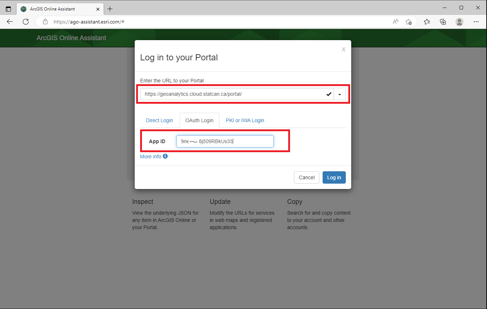
-
A pop-up window will appear, select StatCan Azure Cloud Login 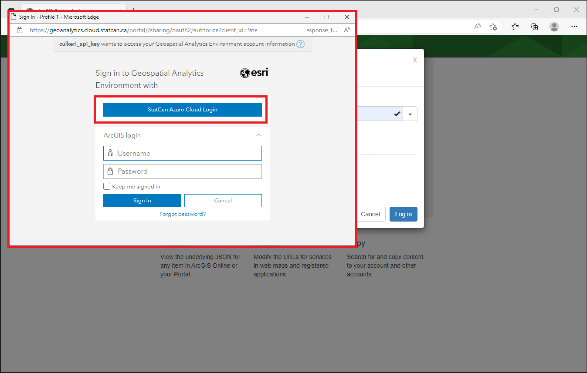
-
In the Assistant Home page, Select the folder where you map is saved on the Portal 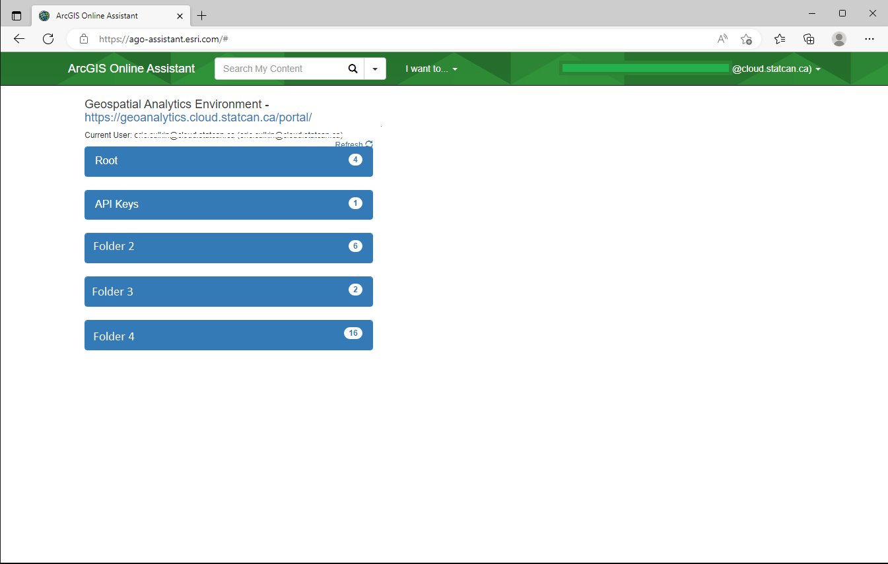
-
Select I want to, then Update the URLs of Services in a Web Map 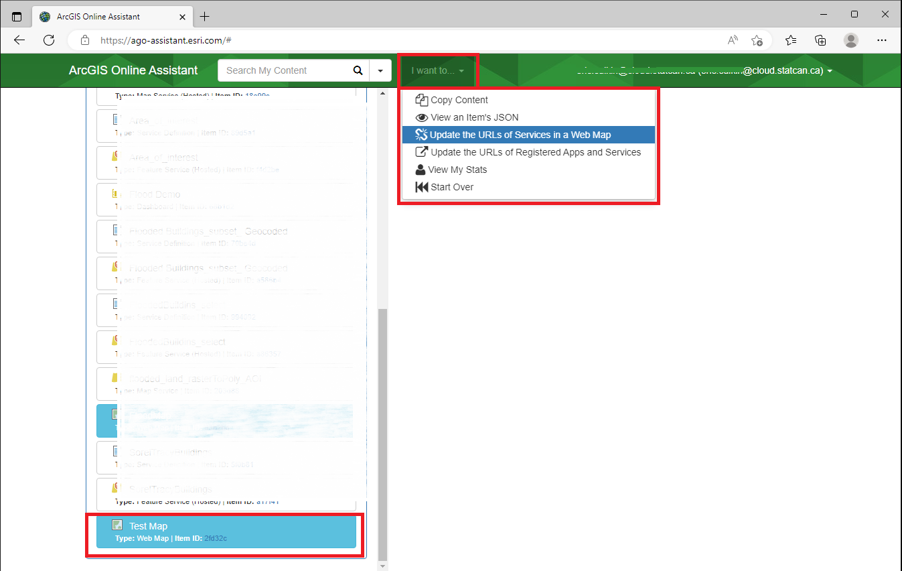
6.In the Find file, enter the URL of the old layer you want to replace. In replace enter the new URL. Scroll down and select Update Then wait for the Success message.
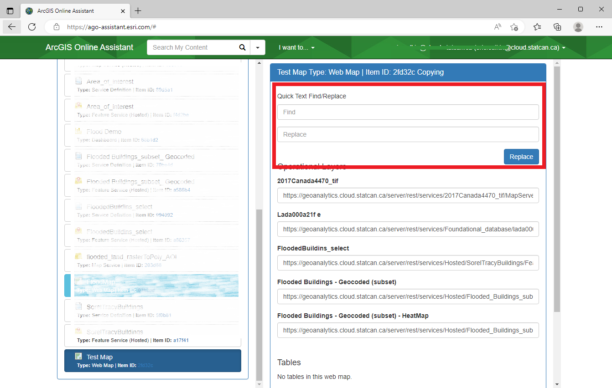
Where to find the Feature Service URL
The URL Can be found in the Portal, on the Feature Services Overview Page:
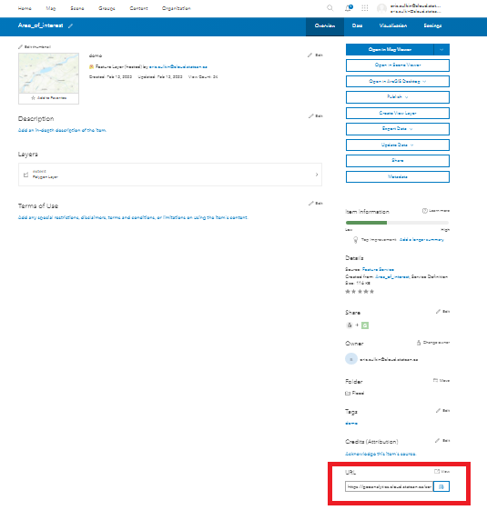
The data in your map will now reflect the new service. You will may need to adjust the Name of the layer on your map, as it will reflect the origina layer.
For those who prefer to do things via Python API; follow these instructions provided by ESRI
Replacing a Web Map within a Web App
Proceed with Caution!
Changing a map in an existing web app may have unintended consequences. Widgets and controls might break and need to be reconfigured. Ensuring layer names and table headers match old versions will help keep compatibility, but there is no guarantee. DAS-GAE recommends experimenting on a demo/copied app first.
Risks include: Corrupting content, losing access to items, breaking apps built ontop of the map.
There may be a scenario where you want to replace a web map with a new map in an already built web app. We will walk you through how to do this using the AGO Assistant. We will use the same ArcGIS Online Assistant tool as above, but with a different workflow.
-
Log in to Portal for ArgGIS 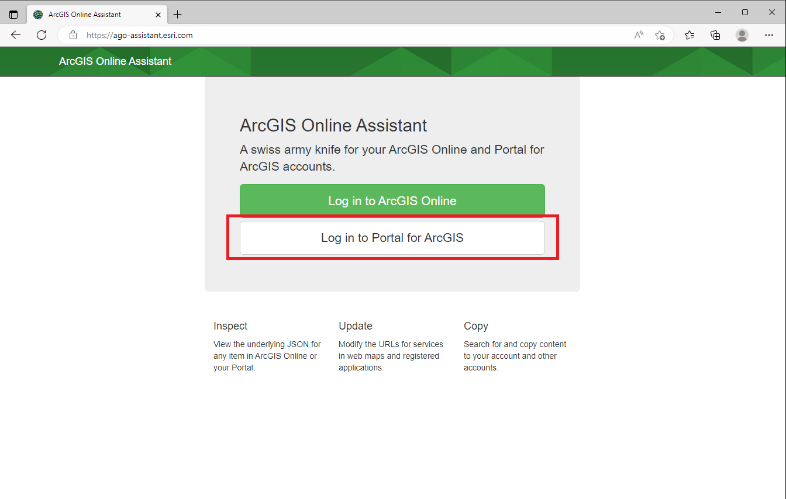
-
Enter the Portal URL https://geoanalytics.cloud.statcan.ca/portal ,and, your APP ID (API Key) from the ArcGIS Portal
-
A pop-up window will appear, select StatCan Azure Cloud Login
-
In the Assistant Home page, Select the folder where you map is saved on the Portal
-
From the I want to... button, select View an Item's JSON, then select the desired app from the highlighted list. The JSON data will appear on the right. 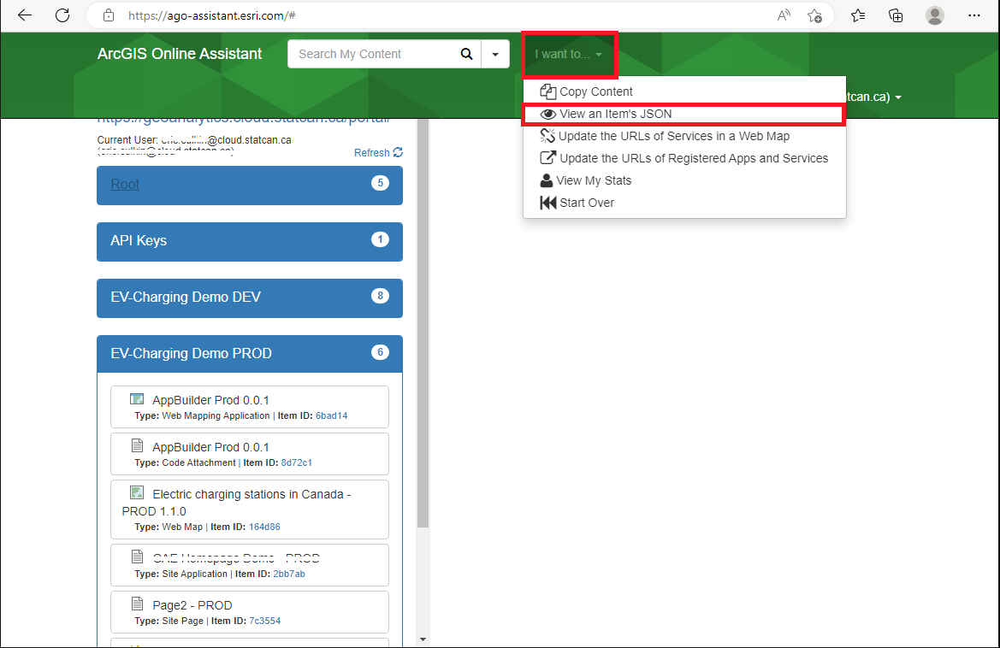
-
Scroll down on the JSON data pane, to the Data category, and Select the Edit icon. The data tile will turn to dark-mode, signifying it is in edit mode. 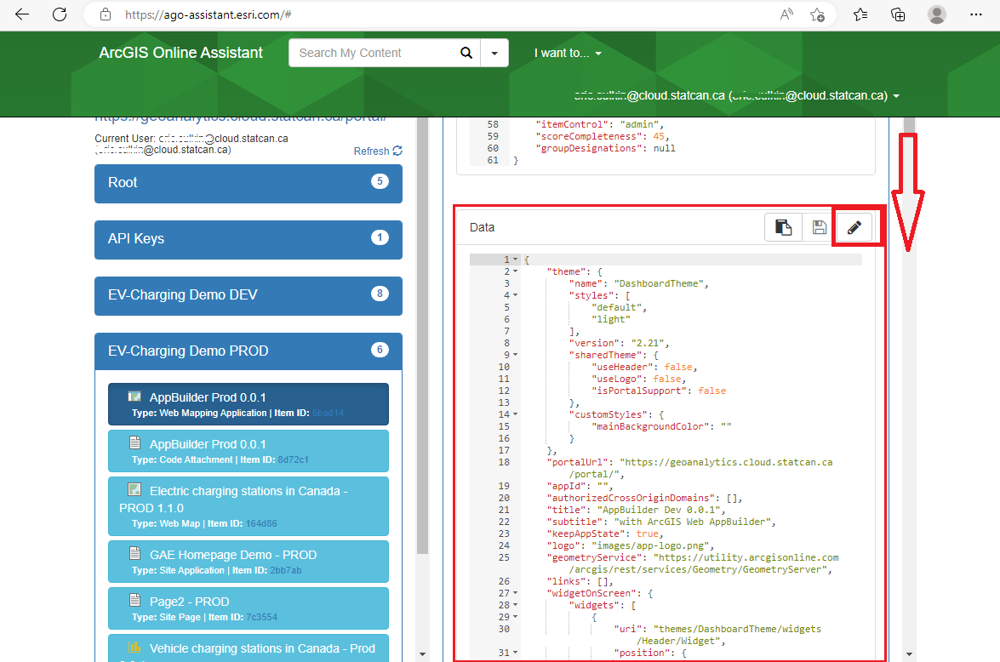
-
In the data tile, locate the map attribute, and replace the itemID field with the new maps ID. 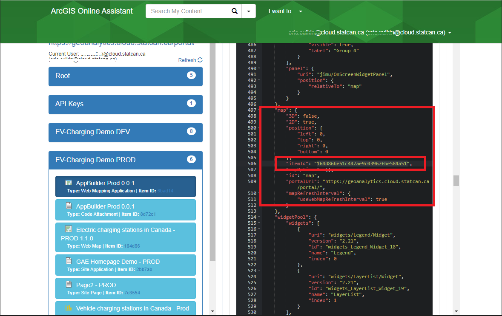
How to find a Map Id
The Map Id can be obtained by visiting the Map's overview page, and copying it from the URL 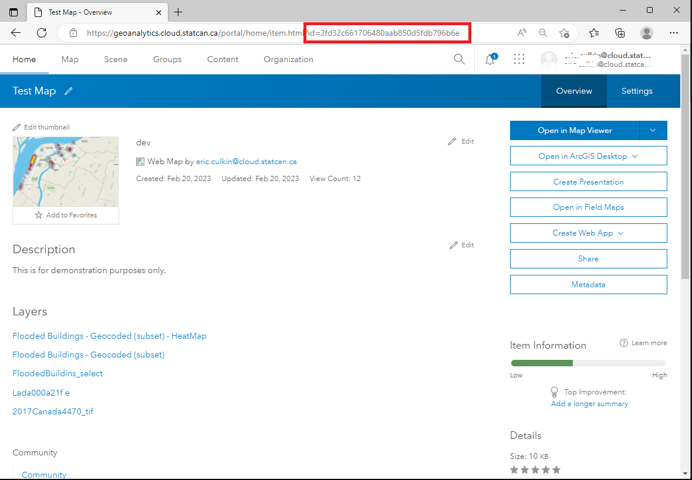
-
Scroll up to the beginning of the data tile and select Save.
Confirm the changes in your app, and reconfigure widgets as needed.
Cloning with the API
Proceed with Caution: CLONE vs COPY
This clone method does not always work. Some dataset, layers, items, etc, will be COPIED instead of CLONED. Copies reference back to the original item, pay close attention to the items ID. It will NOT work for 'map image layers'.
# Connect to the source portal
source_gis = GIS("https://geoanalytics.cloud.statcan.ca/portal", client_id='')
# Connect to the destination portal
target_gis = GIS("https://geoanalytics.cloud.statcan.ca/portal",client_id='')
# Get source content
item_id = source_gis.content.get("#################")
# Clone the item to the target portal
cloned_item = target_gis.content.clone_items(items=[item_id], copy_data=True)